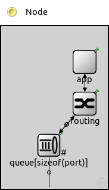
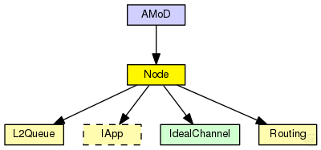
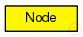

This documentation is released under the Creative Commons license
This documentation is released under the Creative Commons licenseA "Node" consists of a Routing plus an App module
The following diagram shows usage relationships between types. Unresolved types are missing from the diagram.
The following diagram shows inheritance relationships for this type. Unresolved types are missing from the diagram.
| Name | Type | Description |
|---|---|---|
| AMoD | network | (no description) |
| Name | Type | Default value | Description |
|---|---|---|---|
| address | int | ||
| x_distance | int | ||
| y_distance | int | ||
| base_distance | int | ||
| appType | string |
| Name | Value | Description |
|---|---|---|
| display | i=misc/node_vs,gold |
| Name | Direction | Size | Description |
|---|---|---|---|
| port [ ] | inout |
| Name | Type | Default value | Description |
|---|---|---|---|
| queue.frameCapacity | int | 0 |
max number of packets; 0 means no limit |
// // A "Node" consists of a Routing plus an App module // module Node { parameters: int address; int x_distance @unit(m); int y_distance @unit(m); int base_distance @unit(m); string appType; @display("i=misc/node_vs,gold"); gates: inout port[]; submodules: app: <appType> like IApp { parameters: address = address; @display("p=140,60"); } routing: Routing { parameters: @display("p=140,130"); gates: in[sizeof(port)]; out[sizeof(port)]; } queue[sizeof(port)]: L2Queue { parameters: @display("p=80,200,row"); } connections: routing.localOut --> app.in; routing.localIn <-- app.out; for i=0..sizeof(port)-1 { routing.out[i] --> queue[i].in; routing.in[i] <-- queue[i].out; queue[i].line <--> port[i]; } }
This documentation is released under the Creative Commons license